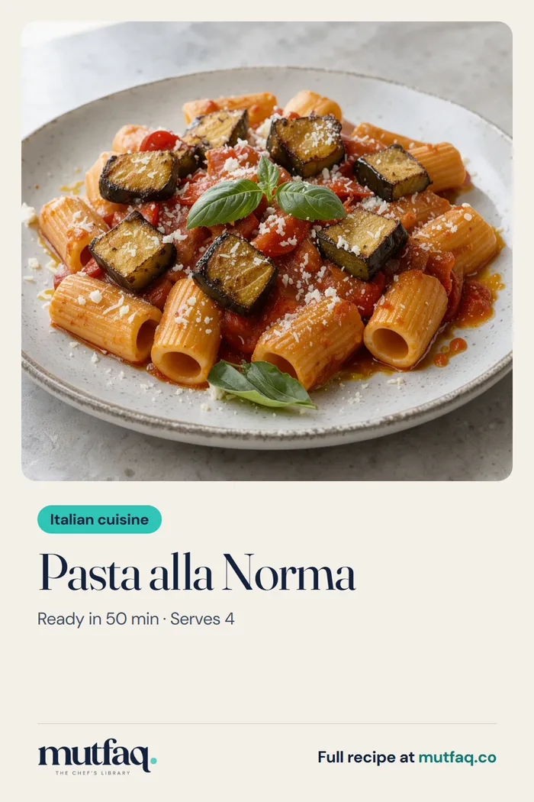

The Chef's Library: around 3,000 chef recipes from regional and world cuisine, with exact grams, temperatures and technique. I own the brand, the content system and the Pinterest reach test.
Start from the problem the person arrived with. Four lenses, in the order I worked through them.
Cups, “a handful”, no oven temperature, no technique. A cook who wants to repeat a dish needs exact grams and degrees, and the reason behind the step.
People decide what to cook before they open a recipe page.
Pinterest is where that decision gets made: one image, one title, one link. If the pin looks like part of one library, the click goes to the exact page and not to a generic homepage.
After four weeks I read the test, then decide whether to scale it across the library.
Tap the glowing boxes on a real pin, or the notes next to it. Every part is a decision.

Same recipes, four languages, four boards. The test reads which door brings people through. Click a board.
A serif that says reference book, a navy that says kitchen at night, and a teal dot that is the only decoration. Two teals, because one of them cannot carry text.

Pick a part of the logo.
Click a swatch. The contrast line shows where the colour can carry text and where it can only decorate.
Numbers first.Time, servings, grams: before any story.
Title pattern: dish, “Recipe”, cuisine.“Pasta alla Norma Recipe · Italian cuisine”, in each page's own language.
One photo style.Matte ceramic plate, light grey surface, soft natural light, no text on the photo.
Never write “tested” or “tried”.An AI review is never presented as a real kitchen test.
Never copy other sites' text or photos.Every recipe and image is the library's own.
Never add brand logos or product adswithout a real agreement.
Pinterest is the new channel. The site side is already built so search engines and answer engines can read every recipe.
Forty pins over four weeks, with evening slots (19:00 and 21:00). Four boards by language: Mutfaq Tarifler, Mutfaq Recipes, Mutfaq Rezepte, Mutfaq Recetas. Each pin's description repeats the numbers a cook searches for: time, servings, the key technique.
The site is static, with a page per recipe in each language, a sitemap and an llms.txt, so search engines and AI answer engines can read and cite every recipe. Pinterest sends the person, the static pages make sure there is something worth landing on.
Click any piece. Each one opens with the reason it exists.
No reach numbers yet, on purpose: the four-week pin test is only now getting underway. I will add outbound clicks and saves by language once it has run.
The site side matters as much as the pin. Click a block.